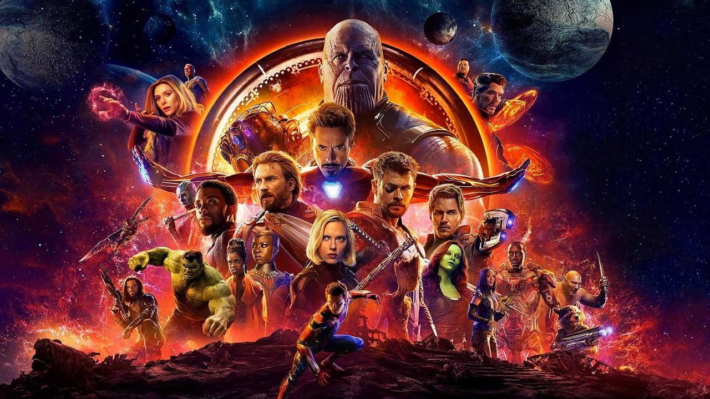
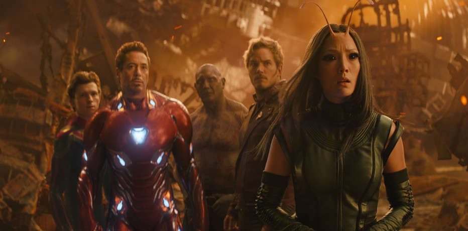

Avengers: Infinity War è un film del 2018 diretto da Anthony e Joe Russo.
Basato sul gruppo dei Vendicatori di Marvel Comics, è il sequel di Avengers: Age of Ultron e il 19º film del Marvel Cinematic Universe. Il film comprende un cast corale che include molti degli attori comparsi nei precedenti film del MCU. In Avengers: Infinity War gli Avengers e i Guardiani della Galassia si alleano per combattere Thanos, intenzionato a dimezzare le forme di vita dell'universo con il potere delle Gemme dell'infinito.
Il film ha ottenuto un notevole successo di critica e pubblico, stabilendo vari record di incassi e venendo candidato a svariati premi cinematografici, tra i quali l'Oscar ai migliori effetti speciali.


Avengers: Infinity War è un film del 2018 diretto da Anthony e Joe Russo.
Basato sul gruppo dei Vendicatori di Marvel Comics, è il sequel di Avengers: Age of Ultron e il 19º film del Marvel Cinematic Universe. Il film comprende un cast corale che include molti degli attori comparsi nei precedenti film del MCU. In Avengers: Infinity War gli Avengers e i Guardiani della Galassia si alleano per combattere Thanos, intenzionato a dimezzare le forme di vita dell'universo con il potere delle Gemme dell'infinito.
Il film ha ottenuto un notevole successo di critica e pubblico, stabilendo vari record di incassi e venendo candidato a svariati premi cinematografici, tra i quali l'Oscar ai migliori effetti speciali.
TRAMA
La nave asgardiana in rotta verso la Terra[N 1] viene ostacolata dalla Sanctuary II di Thanos. Gli asgardiani sono stati decimati dai Figli di Thanos e Thor si trova ai piedi di Thanos, il quale costringe Loki a scegliere tra la vita del fratello e il Tesseract. Loki consegna la Gemma a Thanos, mentre Hulk si scaglia sul titano, venendo però sconfitto facilmente. Heimdall, prima di essere ucciso, manda Banner sulla Terra. Loki offre il suo aiuto a Thanos per invadere nuovamente la Terra, per poi tentare invano di ucciderlo, venendo così soffocato dal titano che infine incendia la nave asgardiana e si teletrasporta, con i Figli di Thanos, sulla Sanctuary.
Sulla Terra Stephen Strange e Wong incontrano Banner che li avverte dell'imminente pericolo. Poco dopo Tony Stark, mentre sta passeggiando con Pepper Potts, viene raggiunto da Strange e Banner. Subito dopo arriva una delle Q-Ship, le navi satelliti della Sanctuary, con Fauce d'Ebano e Cacciatore d'Ossidiana. Si scatena una feroce battaglia a cui si aggiunge anche Peter Parker. A causa del trauma subito nello scontro con Thanos, Banner non riesce più a trasformarsi, rimanendo in disparte. Strange viene catturato e portato a bordo della nave nemica; Banner tenta di contattare Steve Rogers, mentre Iron Man e Spider-Man raggiungono la nave su cui Fauce d'Ebano sta torturando Strange per ottenere la Gemma, sconfiggendo Fauce e liberando Strange. Nel frattempo Wanda Maximoff e Visione sono a Edimburgo, dove vengono attaccati da Proxima Media Nox e Gamma Corvi, membri dei Figli di Thanos, che tentano di rubare la Gemma della mente. Grazie all'intervento di Captain America, Natasha Romanoff e Falcon, gli scagnozzi di Thanos si ritirano, ma Visione rimane ferito gravemente. Rogers e i suoi si dirigono al quartier generale degli Avengers, dove si trovano anche Banner e War Machine, decidendo di andare nel Wakanda per curare Visione.
Nello spazio Thor viene raccolto dai Guardiani della Galassia. Thor, Rocket e Groot si dirigono a Nidavellir, uno dei Nove Regni, abitato dai Nani, costruttori delle più potenti armi asgardiane tra cui Mjolnir, mentre gli altri vanno a Ovunque per prendere la Gemma della realtà. Ma quando Star-Lord e i suoi arrivano, Thanos ha già ottenuto la Gemma e torna sulla Sanctuary rapendo Gamora. Anche Nebula si trova a bordo della navicella e viene torturata finché Gamora non rivela la posizione della Gemma dell'anima. Thanos e Gamora giungono così su Vormir, dove li accoglie Teschio Rosso, ritrovatosi lì dopo lo scontro con Captain America, il quale rivela a Thanos che per ottenere la Gemma dovrà sacrificare l'anima di una persona amata; il titano, con le lacrime agli occhi, uccide sua figlia Gamora.
Stark, Parker e Strange raggiungono Titano, il pianeta natale di Thanos, dove trovano e si alleano con una parte dei Guardiani della Galassia. Strange in una delle sue meditazioni scopre che solo in un futuro su oltre quattordici milioni gli Avengers saranno vittoriosi. Intanto Rogers e gli altri arrivano nel Wakanda dove si riuniscono a Bucky Barnes e T'Challa: Visione viene affidato a Shuri con l'intento di estrarre la Gemma dalla sua fronte senza ucciderlo. Nel frattempo su Nidavellir Thor incontra Eitri, l'unico dei Nani lasciato in vita da Thanos, che lo ha costretto a forgiare il Guanto dell'infinito per poi spegnere la stella che alimenta la fucina. Thor e Rocket riescono ad accendere nuovamente la stella permettendo a Eitri di forgiare l'ascia Stormbreaker. Nel Wakanda giungono gli eserciti di Outriders guidati dall'Ordine Nero, mentre su Titano giunge Thanos che viene messo in difficoltà dagli eroi presenti. Mantis, grazie ai suoi poteri, percepisce il lutto di Thanos per la perdita della figlia e ciò porta Quill a perdere la ragione e a far fallire il piano. Thanos, ripresosi, affronta Stark e lo colpisce gravemente: a questo punto Strange offre al titano la Gemma del tempo in cambio della vita di Tony, sicuro di ciò che aveva visto durante la sua meditazione.
In Wakanda Okoye, Wanda e Natasha sconfiggono Proxima Media Nox, Banner nell'armatura Hulkbuster affronta Cacciatore d'Ossidiana e Gamma Corvi insegue Visione mentre Rogers, Falcon, M'Baku, War Machine, Bucky, T'Challa e i sopraggiunti Thor, Rocket e Groot combattono gli Outriders. I due membri dei Figli di Thanos vengono sconfitti, ma subito dopo arriva Thanos. Wanda è costretta a distruggere la Gemma della mente, uccidendo così anche Visione, mentre gli altri Avengers tentano di rallentare invano Thanos, il quale, usando la Gemma del tempo, ricompone Visione e lo uccide per la seconda volta, ottenendo così anche l'ultima delle Gemme dell'infinito. Thor scaglia la nuova arma contro Thanos colpendolo violentemente al petto, non riuscendo però a eliminarlo. Il titano schiocca le dita, poi apre un portale e si ritira. Bucky, T'Challa, Groot, Wanda, Falcon, Mantis, Drax, Quill, Strange e Parker si dissolvono. Thanos, che è quindi riuscito nel suo intento di sterminare metà della vita nell'universo, si siede soddisfatto in una capanna.
Nella scena dopo i titoli di coda Maria Hill e Nick Fury notano gli effetti dell'azione di Thanos, di cui loro stessi sono vittime. Poco prima di scomparire, Fury riesce a inviare una richiesta d'aiuto con un cercapersone.